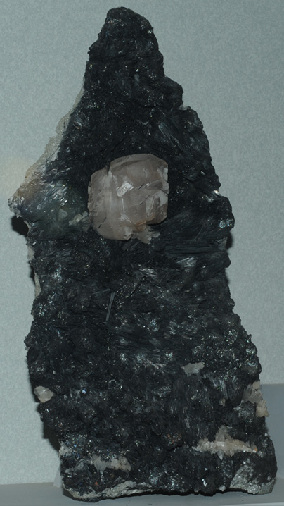
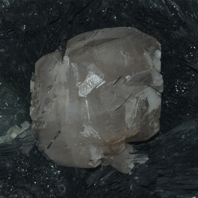

|

| Cu10(Pb,Fe)S6
This sample of betekhtinite is displayed in the Smithsonian Museum of Natural History. Betekhtinite is a sulfide mineral of copper, lead and iron with the composition Cu10(Pb,Fe)S6 . This large sample is about 12x35 cm and is from No. 55 mine, Dzhezkazgan, Kazakhstan. The white crystal formed with it is calcite.

|